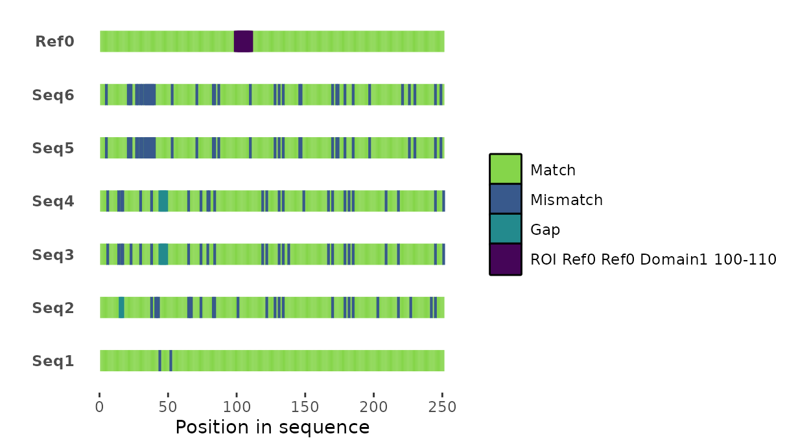
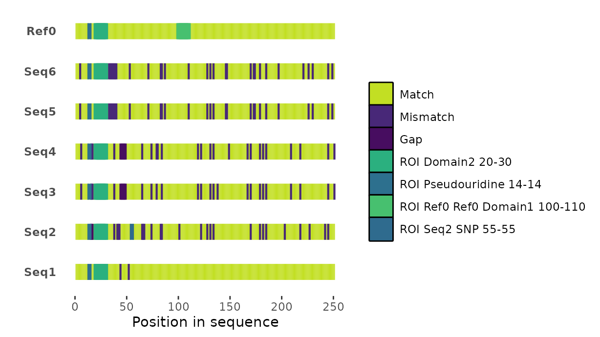
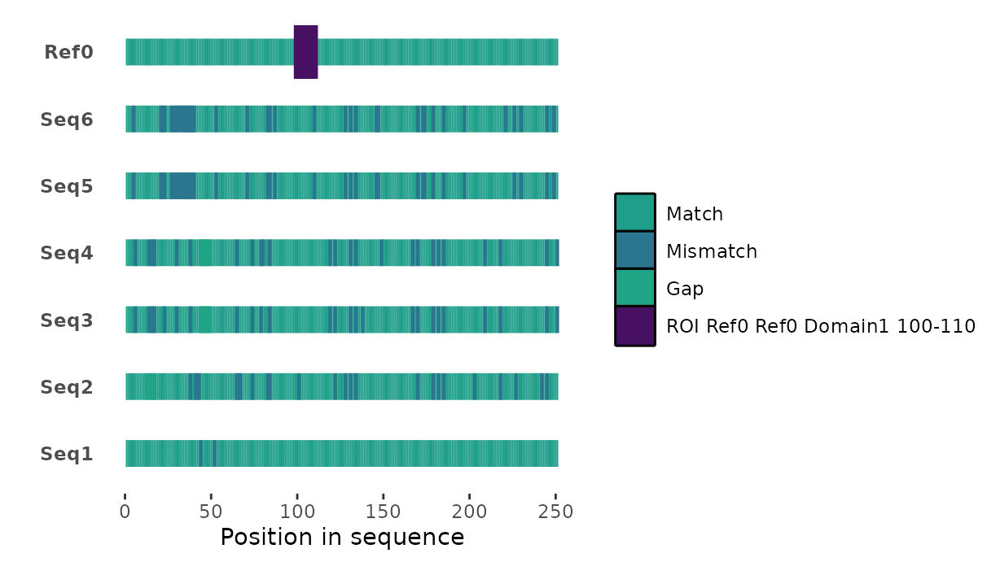
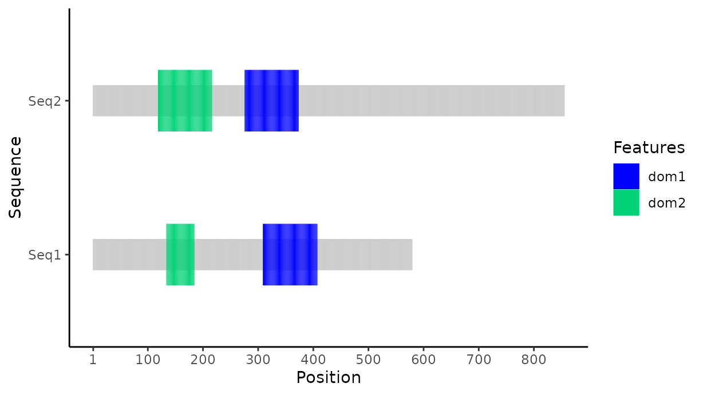
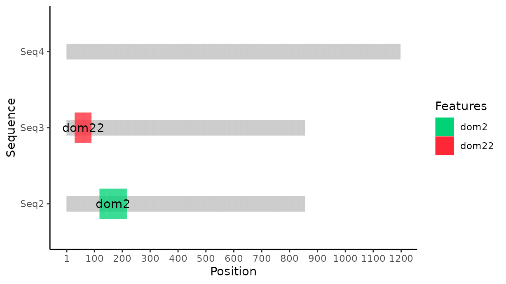

What is seqvisr?
Visualizing biological sequence data is a common use-case in bioinformatics, computational biology, and biology as a whole. “Visualization” is often in the form of a cartoon/diagram that captures the relevant higher-level information while abstracting away the sequence itself. For instance: a protein sequence is (in some senses) much more comprehensible like so:
------[DOMAIN1]------[DOMAIN2]------
Than like so:
MEVPTMSFGECAPSDRGDRFHWMPFDSTGGCVLPDD
seqvisr is an attempt to bring such functionality to R whereby sequences can be visualized in R natively without having to resort to external tools.
In specific, seqvisr offers two functions (at the moment):
msavisr()for visualizing multiple sequence alignments (MSAs).pdomvisr()for visualizing amino acid/protein sequences.
Installation
As of version 0.2.0, seqvisr is only available via GitHub (https://github.com/vragh/seqvisr). Please ensure that the devtools package has been installed already (install.packages("devtools")). seqvisr can be installed as follows:
devtools::install_github("vragh/seqvisr")
Then load the package for use like so:
Multiple sequence alignment (MSA) visualization with msavisr()
A sequence alignment is a relative arrangement of two sequences such that identical/similar character in either sequence are aligned to each other. An MSA is an extension of this concept to more than two sequences (see https://en.wikipedia.org/wiki/Multiple_sequence_alignment for an introduction). MSAs are informative with regards to evolutionary, structural, and functional conservation of DNA and proteins. A typical MSA might look something like this:
Seq1 ATGCATTT
Seq2 ATGC-TTT
Seq3 AT-C-TTT
Seq4 ATGC-T--
Although MSAs can be inspected and interpreted by hand, this can be an extremely cumbersome process. This is especially true for MSAs that have thousands of columns and tens or hundreds of sequences.
msavisr() was developed to alleviate this problem.
Given the path to a FASTA-formatted file containing an MSA, the user can use msavisr() to designate one of the sequences within as the “reference”, and then visualize all the other sequences in terms of gaps/insertions/deletions with respect to it. In addition, arbitrary features of interest (“regions of interest”/ROIs)–e.g., a single residue on the 5th sequence in the alignment–can be specified to the function to highlight it separately, giving the user full control over the visualization process.
Here is an example illustrating the the basic function call.
#Loading sample data.
testmsa <- system.file("extdata", "testaln_mrna.fasta", package = "seqvisr", mustWork = TRUE)
#Basic visualization with the sequence "Ref0" set as the reference.
msavisr(mymsa = testmsa, myref = "Ref0")
The basic features highlighted by msavisr() are the matches, mismatches, and gaps in the MSA. By default, msavisr() uses colorblind-friendly colors. Set cbfcols = FALSE to disable this.
The defining feature of msavisr() is that arbitrary portions of one or more sequences can be highlighted by specifying them as regions of interest (ROIs). These will show up with their own colors in addition to the matches, mismatches, and gaps.
Each ROI must be indicated as a vector wherein the first value indicates the sequence (optional), the second the position(s) as integer (ranges), and the third an identifier string for the ROI.
So an ROI looks like this:
c("sequence_name", positions_as_integers, "sequence_identifier")
As msavisr() can accept an arbitrary number of ROIs, these ROI vectors must always be passed to the function enclosed in a list() like so:
Wherein in each c(...) is an ROI vector.
EVEN IF ONLY ONE ROI is being passed to msavisr(), it MUST be enclosed by the list() function.
Here is an example of msavisr() with a single ROI named “Ref0 Domain1” that covers positions 100 to 110 on the sequence “Ref0”.
roi1 <- c("Ref0", 100:110, "Ref0 Domain1")
msavisr(mymsa = testmsa, myref = "Ref0", myroi = list(roi1))
An example with additional ROIs.
#A ROI that indicates a single column (number 14) in the MSA as pseudouridines (a type of a modified nucleic acid).
roi2 <- c(14, "Pseudouridine")
#A "Domain2" defined on all sequences as existing between positions 20 and 30.
roi3 <- c(20:30, "Domain2")
#A single nucleotide polymorphism (SNP) at position 55 on the sequence "Seq2".
roi4 <- c("Seq2", 55, "SNP")
#Putting all the ROIs in a list and passing it to msavisr().
roi_list <- list(roi1, roi2, roi3, roi4)
msavisr(mymsa = testmsa, myref = "Ref0", myroi = roi_list)
The dimensions of the matches (i.e., conserved positions), non-matches (i.e., mismatches and gaps), and ROIs can be adjusted freely. For example:
roi1 <- c("Ref0", 100:110, "Ref0 Domain1")
msavisr(mymsa = testmsa, myref = "Ref0", myroi = list(roi1), hroi = 0.8)
The user can also set the colors for the matches, mismatches, and gaps manually through the basecolors argument. Likewise, custom colors for the ROIs can be set through the roicolors argument. In both cases colors should be supplied as alphanumeric vectors, and there must be as many colors as there are features. (But msavisr() will attempt to provide its own color replacements if any are missing.)
Supplying custom colors is especially useful in cases where msavisr() assigns colors that are too close to one another in colorspace. Also, since msavisr() chooses colors randomly, custom colors may be preferrable in situations where the colors should be maintained over multiple plots. (Note: msavisr() will ALWAYS attempt to assign unique colors to every feature including the basic features.)
roi1 <- c("Ref0", 100:110, "Ref0 Domain1")
msavisr(mymsa = testmsa, myref = "Ref0", myroi = list(roi1), hroi = 0.8, roicolors = ("red"))
Finally, the function is sequence alphabet agnostic. So it will work with both amino acid and nucleotide sequences. However, its capability to handle amino acid mismatches is only very basic at the moment. For instance, it cannot recognize conservative substitutions, and will color all mismatches with the same color.
Please see ?msavisr for more information on this function.
Protein domain visualization with pdomvisr()
Sequences (especially protein sequences) are often subject to annotation whereby domains and other features of interest are identifed in them. It is often very useful to visualize sequence annotations, and pdomvisr() represents a native tool in R to achieve this.
Most tools provide the annotation data in a tabular format (alongside other formats). Irrespective of what the output table looks like, it can be coerced into this form:
sequence_name sequence_length sequence_offset domain_name domain_start domain_end
seq1 300 0 dom1 200 250
seq1 300 0 dom2 270 280
seq2 600 0 dom1 150 170
seq2 600 0 dom2 400 550
The columns here are self-explanatory. All columns here except sequence_offset should be generated by most annotation tools automatically. The sequence_offset column is something that needs to be manually added: it is specific to pdomvisr(), and allows for appropriate placement of partial sequences (especially with reference to other sequences). This is useful, for instance, when only an internal fragment of a protein sequence is being plotted. For most use cases, the sequence_offset column values can be set to 0.
Needless to say, each row corresponds to one particular domain in the sequence. Therefore, sequences with multiple domains should have multiple rows in the table.
This is the standard (and only accepted) input format for pdomvisr(). pdomvisr() can be provided a name of (or path to) a file that contains the data formatted in this manner. Alternatively, if the data has already been loaded into the R environment, the function can simply be passed this data.frame/data.table/tibble’s name. In any case, given this input data, pdomvisr() will then draw domain structure.
Here is pdomvisr() in action.
#Loading some sample data.
inpath <- system.file("extdata", "pdomvisr_testdata.tsv", package = "seqvisr", mustWork = TRUE)
annotdat <- read.table(inpath, header = TRUE)
inpdat <- annotdat[1:4, ]
pdomvisr(inpdat)For those interested, this is what inpdat looks like:
inpdat## prot_acc seq_len offset signature_desc start_loc stop_loc
## 1 Seq1 579 0 dom1 308 407
## 2 Seq1 579 0 dom2 133 184
## 3 Seq2 855 0 dom1 275 373
## 4 Seq2 855 0 dom2 118 216It is similar to the input table described above.
Note: although the data were read into R using read.table in the example above, this is not strictly necessary for pdomvisr(). The user can also simply supply it the path to the file, and it will work all the same as long as the data in the file formatted as described above.
One issue that is immediately apparent is that the labels on the domains are not easy to read. By default, pdomvisr() lets ggplot2 calculate the label sizes automatically (label_size = "auto"). To amend this, the labels can either be switched off (by setting label_size = 0) or reduced in size.
Plot with labeling switched off:
pdomvisr(inpdat, label_size = 0)
Plot with labeling switched off:
pdomvisr(inpdat, label_size = 2)One potential issue with the tabular output of most annotation tools is that sequences that have no annotations assigned to them are not listed in the table. There can be scenarios where a sequence with no domains must be visualized alongside its counterparts that do.
pdomvisr() can handle this quite easily.
In such instances, the user simply needs to add (at least) one row for this featureless sequence. The sequence name, sequence length, and offset (if needed) must be specified correctly. The column corresponding to the domain name should carry a NA string, and the start and end positions should be set to 0. This is illustrated below.
inpdat <- annotdat[6, ]
inpdat## prot_acc seq_len offset signature_desc start_loc stop_loc
## 6 Seq4 1197 0 <NA> 0 0And plotting this would result in this:
pdomvisr(inpdat)There is no legend because there are no domains/features to be displayed.
If this were to be displayed alongside other sequences, it might look like this:
inpdat <- annotdat[4:6, ]
pdomvisr(inpdat)
An important feature of pdomvisr() is that it accepts an “offset” parameter that indicates how far away from the actual first position of the sequence the indicated sequence itself is. For instance, a sequence of length 300 might actually be a fragment of a longer sequence that is 500 residues long, with the 300 residue-long sequence being the latter half of it. In such an instance, the rows for this sequence should have an offset value of 200.
This is demonstrated with a small example below where the same sequence is plotted with and without an offset:
w_offset <- c("w_offset", 300, 200, "dom1", 210, 240)
no_offset <- c("no_offset", 300, 0, "dom1", 210, 240)
df <- data.frame(do.call("rbind", list(w_offset, no_offset)), stringsAsFactors = FALSE)
pdomvisr(df)
As can be seen, the only difference is that the sequence with the offset supplied starts further down along the X-axis. By default, the “sequence” corresponding to the offset length is shown. This can be disabled by setting show_offsets = FALSE.
pdomvisr(df, show_offsets = FALSE)The heights, transparencies, and fill colors for the non-feature portions of the sequences can be adjusted by the user. In addition, the number of breaks on the X-axis, legend visibility, and usage of colorblind-friendly colors can also be set by the user. Refer to the help page (?pdomvisr) for more details on these.